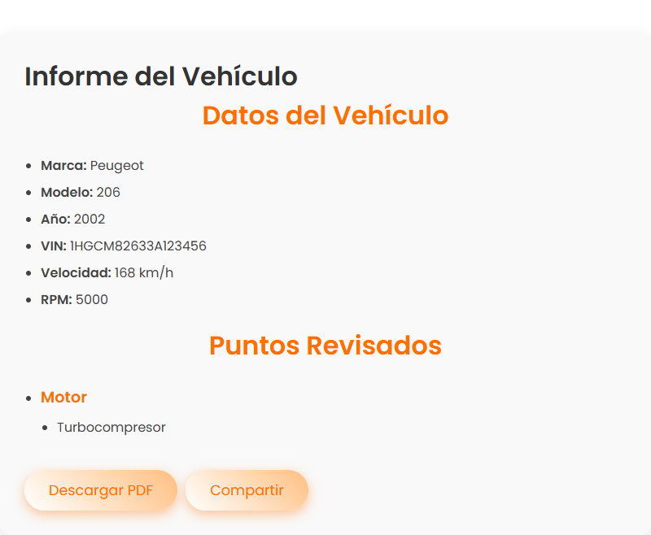

src/app/informe-publico/informe-publico.component.ts

Componente para mostrar un informe público de un vehículo mediante token.
Carga los datos del informe desde la API y muestra las revisiones en secciones.
Permite descargar el informe en PDF y compartir el enlace del informe.
| selector | app-informe-publico |
| standalone | true |
| imports |
CommonModule
RouterModule
|
| styleUrls | ./informe-publico.component.css |
| templateUrl | ./informe-publico.component.html |
Properties |
|
Methods |
|
| compartir |
compartir()
|
|
Comparte el enlace del informe usando la API Web Share si está disponible, o copia el enlace al portapapeles.
Returns :
void
|
| Async descargarPDF |
descargarPDF()
|
|
Genera y descarga un PDF con el contenido del informe.
Returns :
Promise<void>
Promesa que se resuelve cuando finaliza la descarga. |
| ngOnInit |
ngOnInit()
|
|
Método que se ejecuta al iniciar el componente. Obtiene el token de la URL y carga el informe correspondiente.
Returns :
void
|
| prepararRevisiones |
prepararRevisiones()
|
|
Procesa la revisión cruda del informe para preparar las secciones y puntos que se mostrarán en la vista.
Returns :
void
|
| Private titleCase | ||||||||
titleCase(text: string)
|
||||||||
|
Convierte un texto a formato Title Case.
Parameters :
Returns :
string
Texto en Title Case. |
| cargando |
Default value : true
|
|
Indica si el informe se está cargando. |
| datosInforme |
Type : any
|
Default value : null
|
|
Datos del informe cargados desde la API. |
| error |
Type : string
|
Default value : ''
|
|
Mensaje de error en caso de fallo al cargar el informe. |
| Private http |
Default value : inject(HttpClient)
|
|
Servicio HttpClient para realizar peticiones HTTP. |
| revisionesPreparadas |
Type : literal type[]
|
Default value : []
|
|
Revisiones procesadas para mostrar en secciones. |
| Private route |
Default value : inject(ActivatedRoute)
|
|
Servicio ActivatedRoute para acceder a parámetros de la ruta activa. |
import { Component, inject } from '@angular/core';
import { CommonModule } from '@angular/common';
import { ActivatedRoute, RouterModule } from '@angular/router';
import { HttpClient } from '@angular/common/http';
/**
* 
* <br>
* Componente para mostrar un informe público de un vehículo mediante token.
* Carga los datos del informe desde la API y muestra las revisiones en secciones.
* Permite descargar el informe en PDF y compartir el enlace del informe.
*/
@Component({
selector: 'app-informe-publico',
standalone: true,
imports: [CommonModule, RouterModule],
templateUrl: './informe-publico.component.html',
styleUrls: ['./informe-publico.component.css']
})
export class InformePublicoComponent {
/**
* Servicio HttpClient para realizar peticiones HTTP.
*/
private http = inject(HttpClient);
/**
* Servicio ActivatedRoute para acceder a parámetros de la ruta activa.
*/
private route = inject(ActivatedRoute);
/**
* Datos del informe cargados desde la API.
*/
datosInforme: any = null;
/**
* Indica si el informe se está cargando.
*/
cargando = true;
/**
* Mensaje de error en caso de fallo al cargar el informe.
*/
error = '';
/**
* Revisiones procesadas para mostrar en secciones.
*/
revisionesPreparadas: { seccion: string, puntos: string[] }[] = [];
/**
* Método que se ejecuta al iniciar el componente.
* Obtiene el token de la URL y carga el informe correspondiente.
*/
ngOnInit(): void {
const token = this.route.snapshot.paramMap.get('token');
if (!token) {
this.error = 'Token no válido';
this.cargando = false;
return;
}
this.http.get(`https://anthonyx82.ddns.net/taller/api/informe/${token}`).subscribe({
next: (res) => {
this.datosInforme = res;
this.prepararRevisiones();
this.cargando = false;
},
error: () => {
this.error = 'Informe no encontrado o expirado.';
this.cargando = false;
}
});
}
/**
* Procesa la revisión cruda del informe para preparar las secciones y puntos
* que se mostrarán en la vista.
*/
prepararRevisiones(): void {
this.revisionesPreparadas = [];
const rawRevision = this.datosInforme?.vehiculo?.revision;
let revision: Record<string, string[]> | null = null;
if (typeof rawRevision === 'string') {
try {
const safeJson = rawRevision.replace(/'/g, '"');
revision = JSON.parse(safeJson);
} catch (e) {
console.error('Error al parsear la revisión:', e);
}
} else if (typeof rawRevision === 'object' && rawRevision !== null) {
revision = rawRevision;
}
if (revision) {
for (const seccion in revision) {
if (Array.isArray(revision[seccion])) {
this.revisionesPreparadas.push({
seccion,
puntos: revision[seccion]
});
}
}
}
console.log('Revisiones preparadas:', this.revisionesPreparadas);
}
/**
* Genera y descarga un PDF con el contenido del informe.
* @returns Promesa que se resuelve cuando finaliza la descarga.
*/
async descargarPDF(): Promise<void> {
const element = document.querySelector('.informe-container') as HTMLElement;
if (!element) return;
// Import dinámico compatible con Angular 18
const html2pdfModule = await import('html2pdf.js');
const html2pdf = html2pdfModule.default || html2pdfModule;
const opt = {
margin: 0,
filename: `informe-vehiculo-${this.datosInforme.vehiculo.vin}.pdf`,
image: { type: 'jpeg', quality: 0.98 },
html2canvas: { scale: 2 },
jsPDF: { unit: 'pt', format: 'a4', orientation: 'portrait' }
};
// Clonar para eliminar botones sin afectar el DOM real
const clone = element.cloneNode(true) as HTMLElement;
const acciones = clone.querySelector('.acciones');
if (acciones) acciones.remove();
html2pdf().set(opt).from(clone).save();
}
/**
* Comparte el enlace del informe usando la API Web Share si está disponible,
* o copia el enlace al portapapeles.
*/
compartir(): void {
const url = window.location.href;
if (navigator.share) {
navigator.share({
title: 'Informe del Vehículo',
text: 'Consulta el informe de tu vehículo:',
url
});
} else {
alert('Enlace copiado al portapapeles');
navigator.clipboard.writeText(url);
}
}
/**
* Convierte un texto a formato Title Case.
* @param text Texto a convertir.
* @returns Texto en Title Case.
*/
private titleCase(text: string): string {
return text.replace(/\w\S*/g, (txt) => txt[0].toUpperCase() + txt.substring(1).toLowerCase());
}
}
<div *ngIf="cargando" class="loading">
Cargando informe...
</div>
<div *ngIf="error && !cargando" class="error">
{{ error }}
</div>
<div *ngIf="!cargando && !error && datosInforme" class="informe-container">
<h1>Informe del Vehículo</h1>
<!-- Datos del Vehículo -->
<section class="datos-vehiculo">
<h2>Datos del Vehículo</h2>
<ul>
<li><strong>Marca:</strong> {{ datosInforme.vehiculo.marca }}</li>
<li><strong>Modelo:</strong> {{ datosInforme.vehiculo.modelo }}</li>
<li><strong>Año:</strong> {{ datosInforme.vehiculo.year }}</li>
<li><strong>VIN:</strong> {{ datosInforme.vehiculo.vin }}</li>
<li><strong>Velocidad:</strong> {{ datosInforme.vehiculo.velocidad }} km/h</li>
<li><strong>RPM:</strong> {{ datosInforme.vehiculo.rpm }}</li>
</ul>
</section>
<!-- Puntos Revisados -->
<section class="revisiones" *ngIf="revisionesPreparadas.length">
<h2>Puntos Revisados</h2>
<ul>
<li *ngFor="let rev of revisionesPreparadas">
<h3>{{ rev.seccion }}</h3>
<ul>
<li *ngFor="let punto of rev.puntos">
{{ punto }}
</li>
</ul>
</li>
</ul>
</section>
<!-- Errores Detectados -->
<section class="errores" *ngIf="datosInforme.errores?.length">
<h2>Errores Detectados</h2>
<ul>
<li *ngFor="let err of datosInforme.errores">
{{ err }}
</li>
</ul>
</section>
<!-- Botones -->
<div class="acciones">
<button (click)="descargarPDF()">Descargar PDF</button>
<button (click)="compartir()">Compartir</button>
</div>
</div>
./informe-publico.component.css
/* Contenedor general del informe */
.informe-container {
max-width: 800px;
margin: 40px auto;
padding: 30px;
border-radius: 12px;
background-color: #f9f9f9;
box-shadow: 0 5px 15px rgba(0, 0, 0, 0.1);
font-family: 'Poppins', sans-serif;
}
h2 {
text-align: center;
font-size: 2rem;
color: #ff6f00;
margin-bottom: 25px;
}
/* Datos del vehículo */
.informe-container p {
font-size: 1.1rem;
margin: 10px 0;
color: #555;
}
/* Errores */
.informe-container h3 {
font-size: 1.5rem;
margin-top: 30px;
color: #ff6f00;
}
.informe-container ul {
list-style: disc;
padding-left: 25px;
margin-top: 10px;
}
.informe-container ul li {
color: #ff6f00;
font-weight: bold;
font-size: 1rem;
}
/* Botones */
button {
display: inline-block;
margin: 20px 10px 0 0;
font-size: 1.1rem;
background: linear-gradient(45deg, #ffffff, #ffbf80);
color: #ff6f00;
padding: 12px 30px;
border-radius: 50px;
border: none;
box-shadow: 0px 5px 15px rgba(255, 111, 0, 0.4);
cursor: pointer;
transition: transform 0.3s ease-in-out, box-shadow 0.3s ease-in-out;
}
button:hover {
background: #ff6f00;
color: white;
transform: scale(1.05);
box-shadow: 0px 8px 20px rgba(255, 111, 0, 0.6);
}
/* Estado de carga y errores */
.loading,
.error {
text-align: center;
font-size: 1.2rem;
margin-top: 40px;
color: #ff6f00;
}
.informe-container ul {
padding-left: 20px;
margin-bottom: 20px;
}
.informe-container ul li {
font-weight: 400;
font-size: 1rem;
color: #444;
margin-bottom: 8px;
}
.revisiones ul li > h3 {
color: #ff6f00;
font-size: 1.2rem;
margin: 15px 0 10px;
}